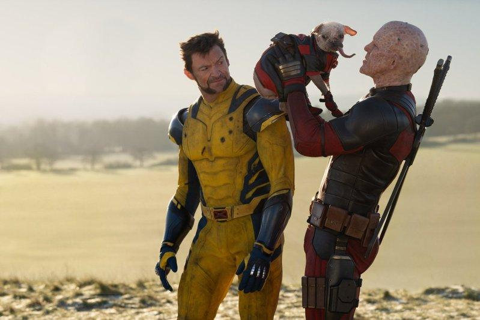
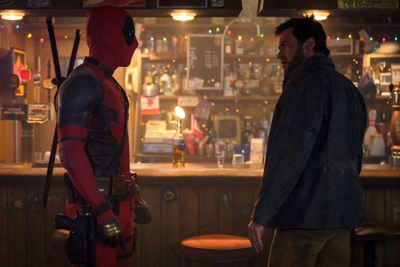

美国漫威超级英雄电影「死侍与金刚狼」（Deadpool& Wolverine）继续高歌猛进，已升至2024年北美和全球票房排行榜亚军。
据票房统计网站BoxOfficeMojo8月4日的电影市场数据，26部影片北美周末票房（8月2日至4日）报收约1.7亿美元，与前一周末创下的2024年迄今北美周末票房最高纪录相比减少约四成。这是北美周末票房连续9个统计周期保持在1亿美元以上。
「死侍与金刚狼」自7月26日首映至今，北美单日票房冠军位置无可撼动；第二个上映周末虽票房环比下跌54.1%，仍以约9700万美元在最新一期北美周末票房榜上遥遥领先。这部科幻动作喜剧片十天之内收获北美票房约3.96亿美元、全球票房达8.24亿美元，不仅刷新2016年和2018年推出的前两部「死侍」的票房数据，还超越「神偷奶爸4」（Despicable Me4），升至2024年北美和全球票房榜第二位。

8月2日亮相的几个「新面孔」冲入本期北美周末票房十强，但大多反响平平。
其中，M·奈特·沙马兰自编自导的悬疑恐怖片「圈套」（Trap）以约1560万美元首映周末票房摘得季军。目前主要电影网站对其评价为IMDb评分6.2、MTC评分53、烂番茄新鲜度48%（98评），CinemaScore打分为C＋。
另一部新片「哈罗德和紫色蜡笔」（暂译，Harold and the Purple Crayon）以约600万美元首映周末票房居第6位。这部奇幻动画喜剧片改编自同名畅销童话故事书，开画反响为IMDb评分5.8、MTC评分35、烂番茄新鲜度28%（36评），CinemaScore打分为A－。
在「老面孔」方面，「龙卷风暴」（Twisters）此番周末票房跌幅有所收窄，以约2265万美元蝉联本期榜单亚军。这部动作冒险片北美累计票房现约1.96亿美元、全球票房约2.74亿美元。
喜剧动画片「神偷奶爸4」以约1125万美元周末票房从上期榜单季军降至本轮排名第4位，其北美累计票房现约3.14亿美元、全球票房约7.52亿美元。
奇幻动画片「脑筋急转弯2」（Inside Out2）则以约670万美元周末票房从上期榜单第4名退居本轮排名第5位。自6月14日上映至今，其北美票房约6.27亿美元，全球票房高达15.55亿美元，依然是2024年北美和全球票房榜无可争议的霸主。